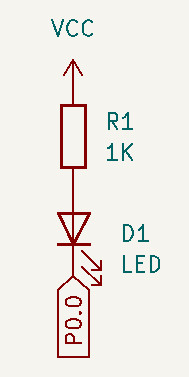
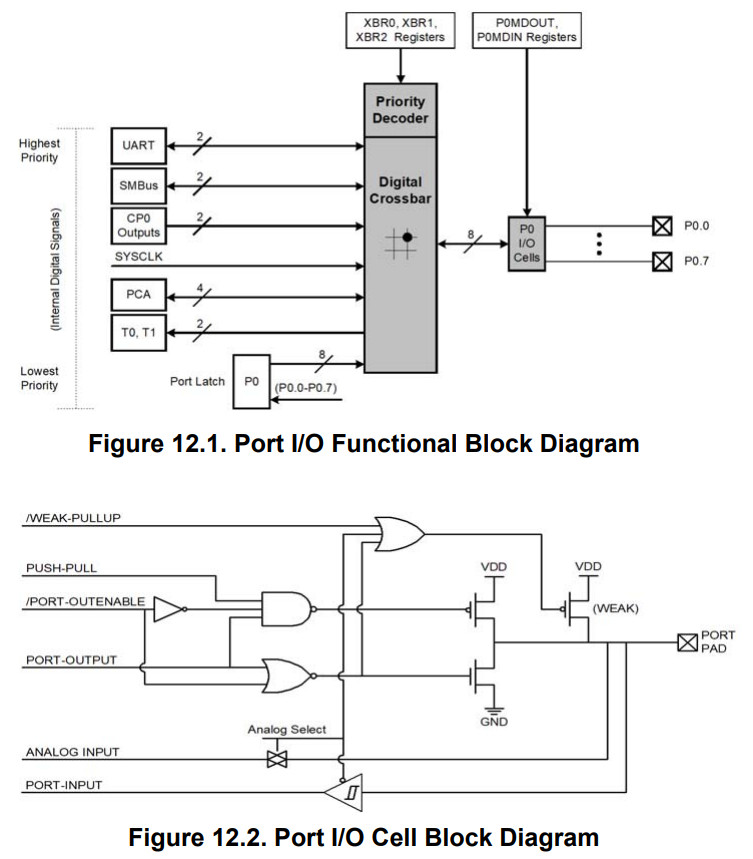
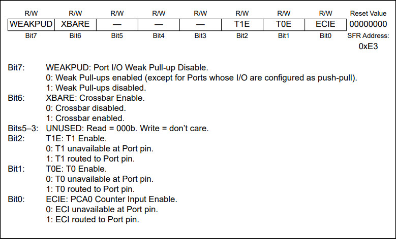
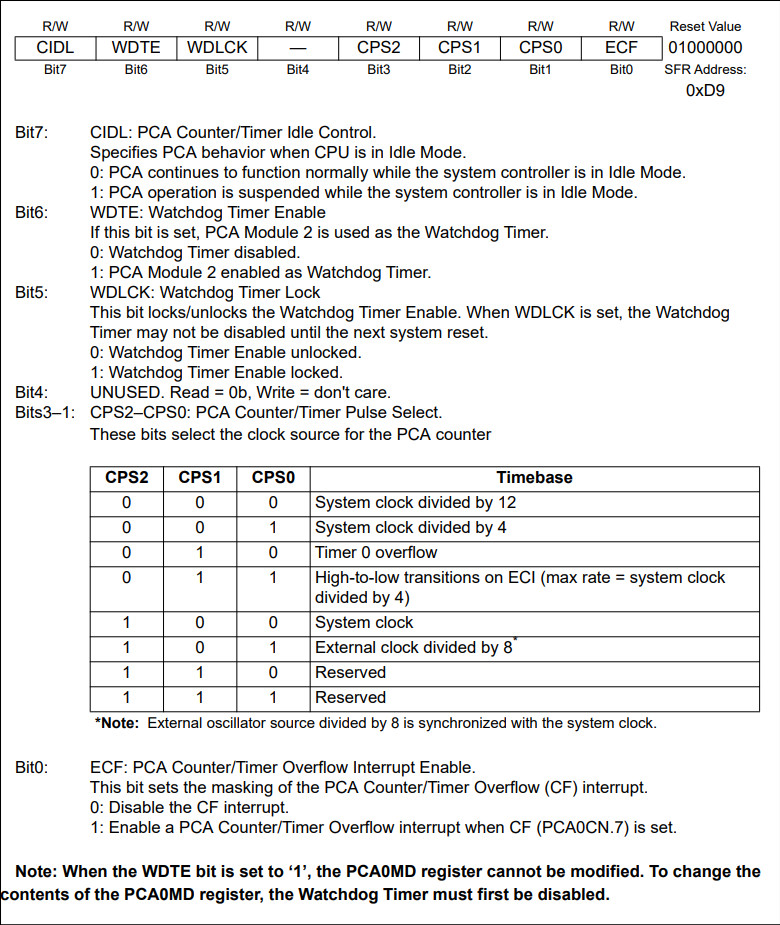
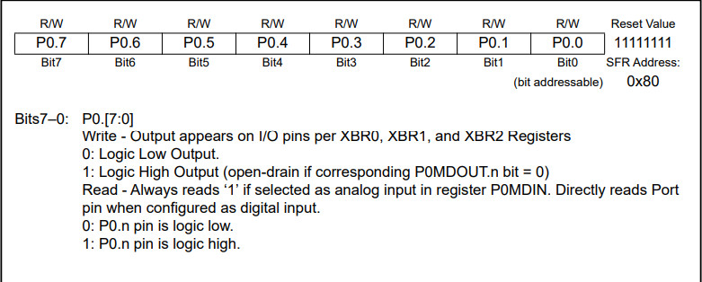
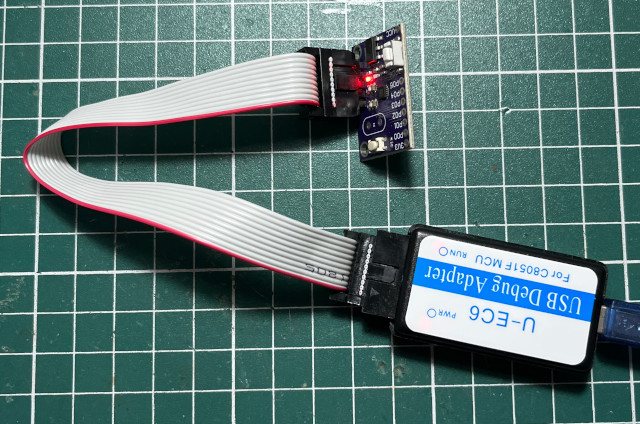
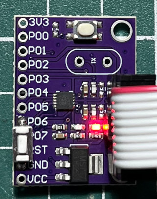
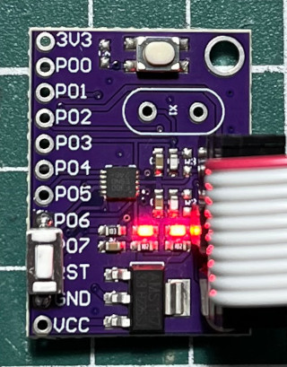

參考資訊：
http://www.colecovision.eu/mcs51/C8051F300%20Development%20Board%20Module%20LED.shtml
LED是連接到P0.0





#include <stdio.h>
__sfr __at(0x80) P0;
__sfr __at(0xe3) XBR2;
__sfr __at(0xd9) PCA0MD;
void delay(unsigned long cnt)
{
while (cnt--) {
}
}
void main(void)
{
XBR2 = 0x40;
PCA0MD = 0x00;
while (1) {
P0 ^= 1;
delay(100000);
}
}
連接燒錄器

$ sdcc -mmcs51 --std-c99 main.c
$ ec2writeflash --port=USB --mode=c2 --run --hex main.ihx
FOUND:
device : C8051F300
mode : C2
Loaded 158 bytes between: 000000 to 00009D
Writing to flash
start=0x00000, end=0x0009d
done
Starting target
Exiting now
Disconnect done
完成

